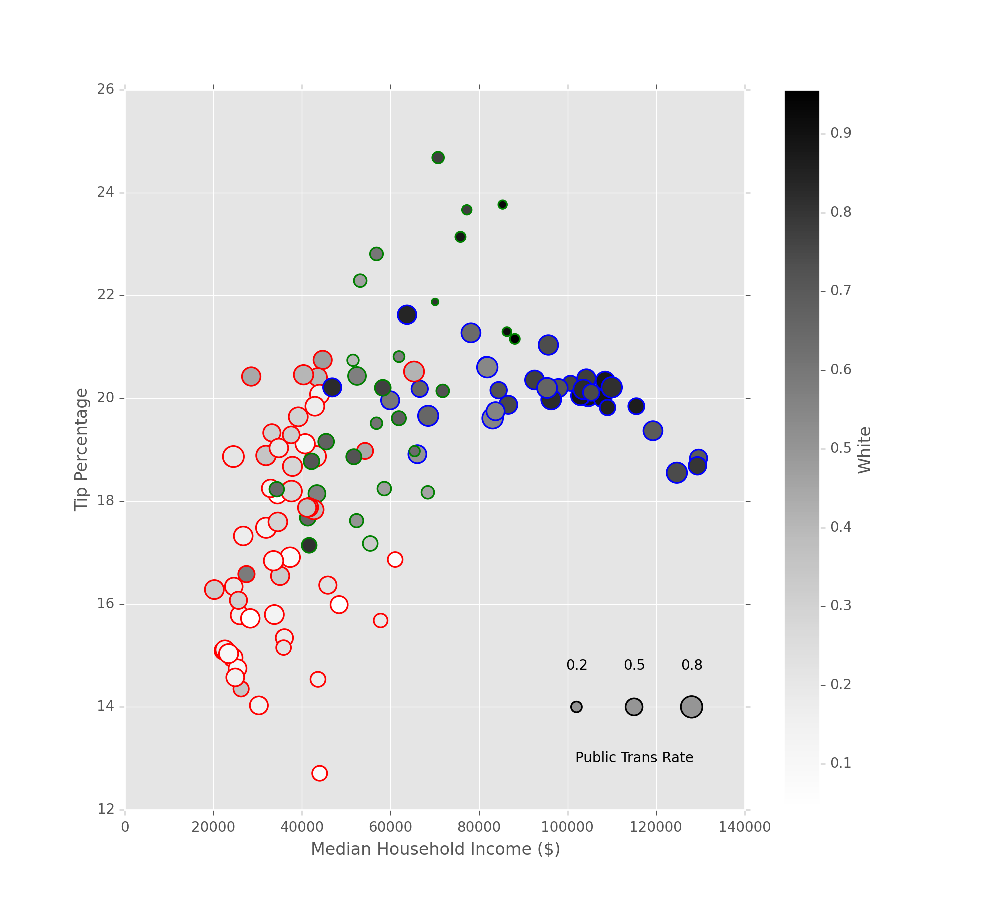
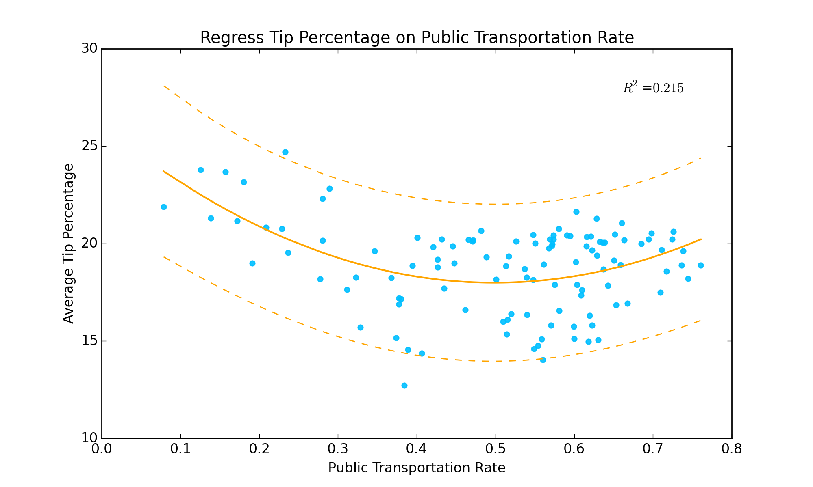
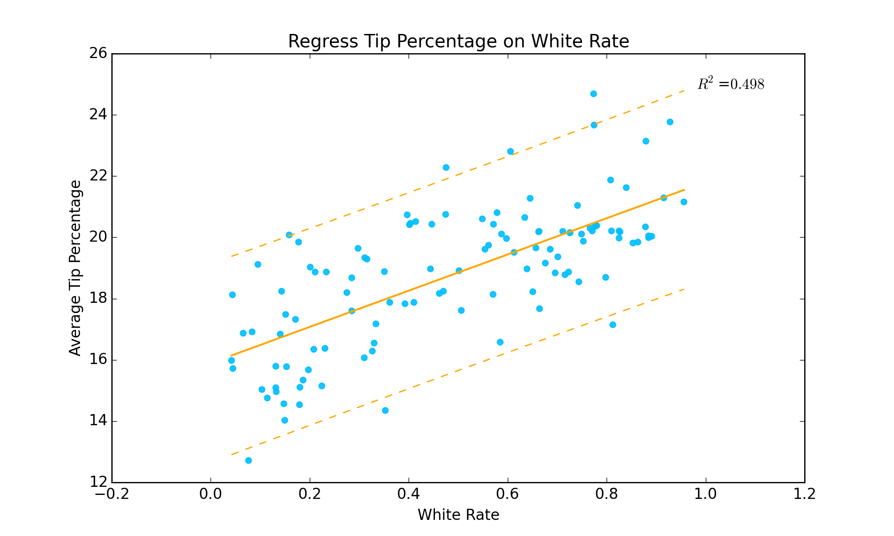
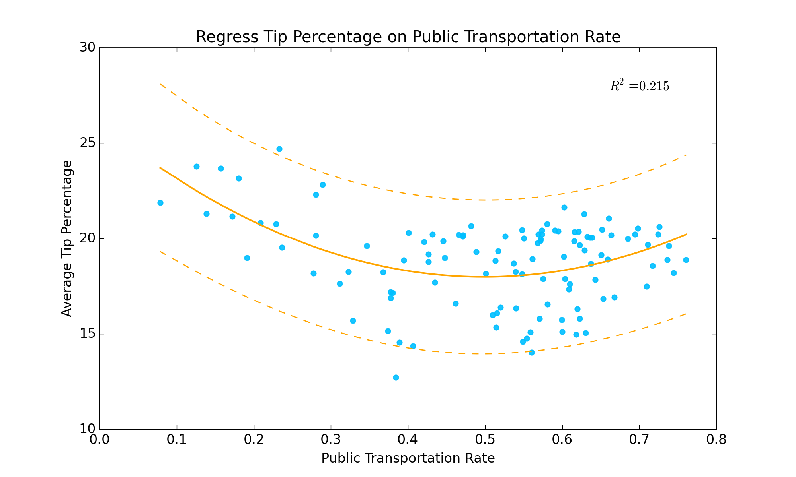
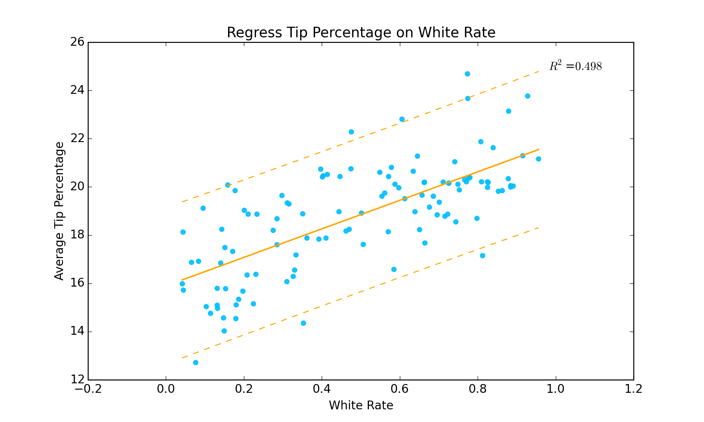
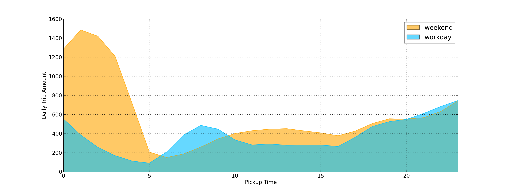
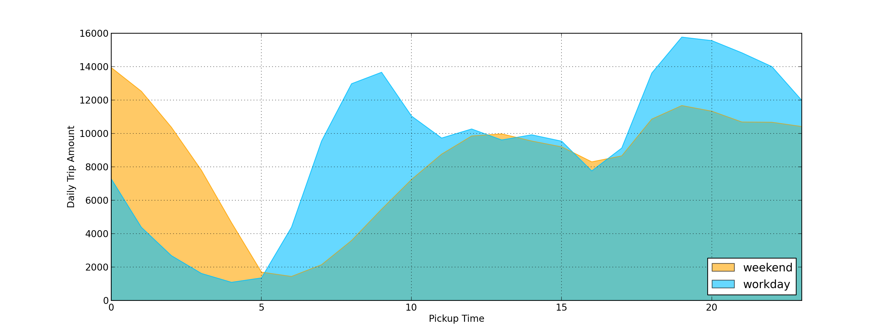
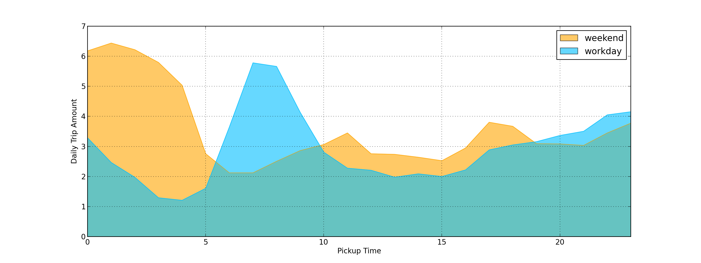

K-means clustering algorithm applied on features: male rate, white people rate, median income and public transportation usage rate.

This is a sample text region to describe this chart.
Individual statistics test for each feature: male rate, white people rate, median income and public transportation usage rate.
 



Cluster 0 timeseries plot (red)

Cluster 1 timeseries plot (green)

Cluster 2 timeseries plot (blue)
